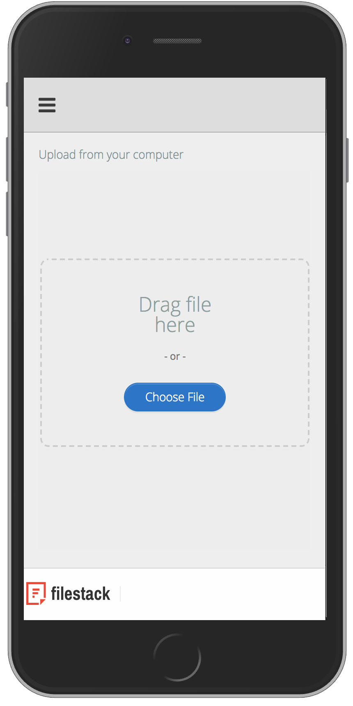
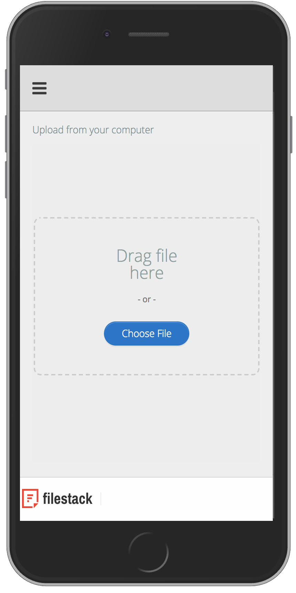
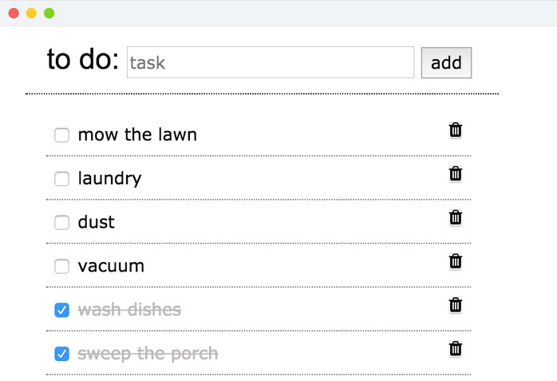

- Each year, I spent time searching the web trying to find perennial plant species I owned to ensure their proper
exposure and care. The issue was that I could never guarantee I had found the exact species.
- Users of the app are allowed to register, login, search and add plant species to their account. Upon selection of a plant,
the exposure and care autopopulates in the details. A notes section is available per plant added, leaving room for
jotting notes throughout the season, allowing extra attention for the plants that need it.
- Technologies used: MEAN Stack (MongoDB, Express.js, AngularJS, Node.js), JavaScript, Bootstrap, HTML5, CSS3,
Angular-Xeditable, Angucomplete Alt, Filestack and Heroku.
- Check out the app on Heroku.
- Check out the code on GitHub.
flora

- I created my responsive portfolio site with the following technologies: HTML5, CSS3, Angular, JavaScript, jQuery, Gulp.js, Sass and Neat Grid 2.0.
- Please click around to check it out and please let me know if you have any questions.
- Check out the code on GitHub.


- Lab 651 is a technology company that specializes in building devices for the Internet of Things.
- Collaborating with three others, our team created an application to act as a Content Management System for
users of devices created by Lab 651. This app will allow the admin and users to login, facilitate communication with
contacts associated with each device, and alter the status and threshold of the device.
- My focus on this project has been building the API, working with Particle.io, Nodemailer and Twilio API’s, structuring the database, incorporating passport, setting up register/login, and creating scrum boards.
- Technologies used: MEAN Stack (MongoDB, Express.js, AngularJS, Node.js), Particle API, JavaScript, Passport,
Bootstrap, HTML5, CSS3, Sass, Gulp.js, Angular-Xeditable, Heroku, Nodemailer, Twilio and SweetAlerts.
- St. Paul-Based Lab651 & Keystone Automation Form Joint IoT Venture
- Lab 651
- A gallery of photos from my life, to practice Angular and $http calls to the server. Users can click on photo to see description,
leave a comment and like photos.
- Technology used: HTML, CSS, JavaScript, Angular, AJAX, Node.js, Express and Heroku
- Check out the code on GitHub.
- Check out the app on Heroku.

- Full-stack To Do list application. The app allows the user to create a task, complete a task & delete a task.
- Technology used: HTML5, CSSe, JavaScript, jQuery, AJAX, Node.js, Express & SQL.
- Check out the code on GitHub.

- Early jQuery practice. Click button to create a new square box. Each box loads as a new random color. On click of each box will turn that box black.
- Check out the code on GitHub.